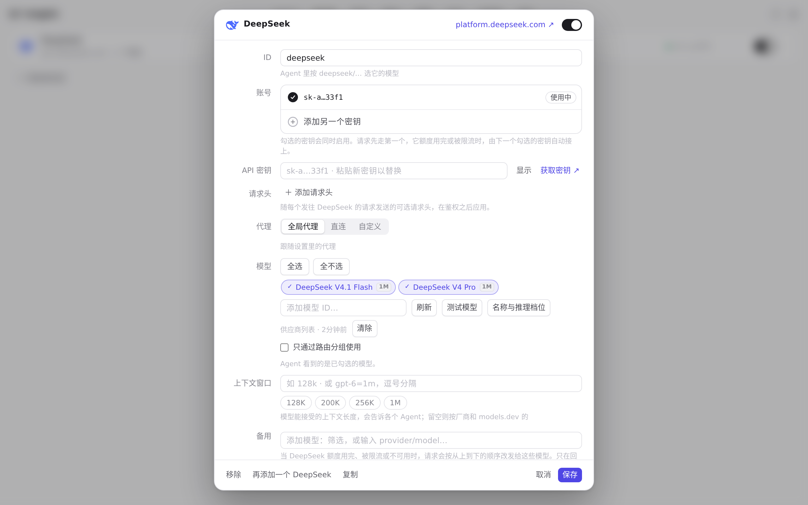
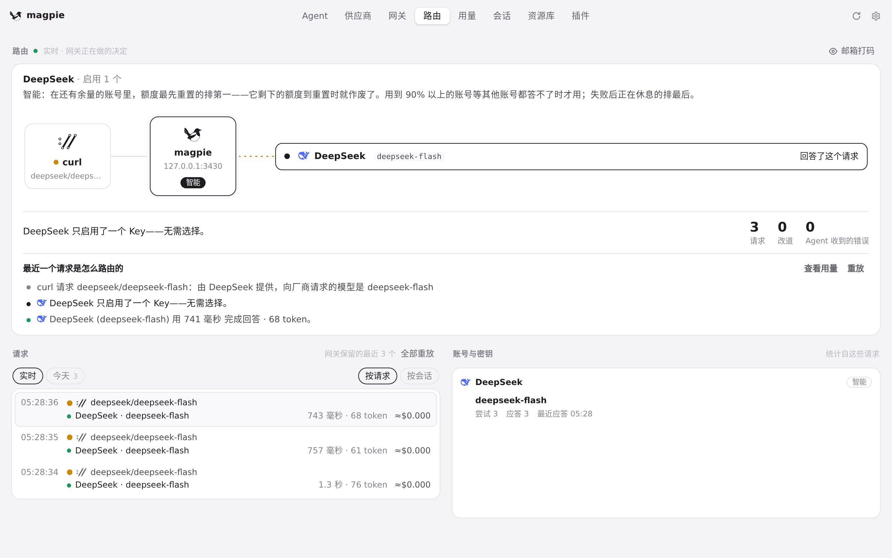
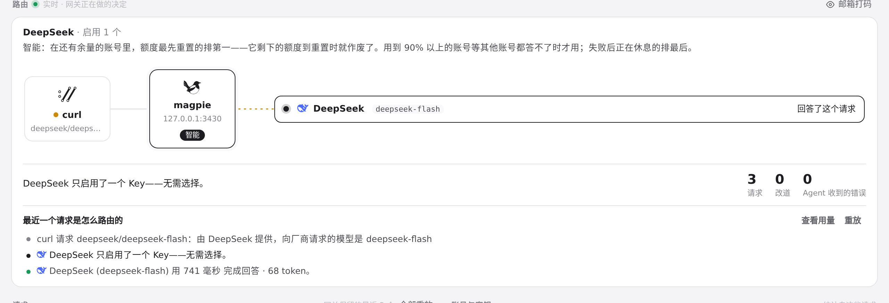

#517 界面预览
commit c4ce914 · 回到 PR · 「最少使用」路由的说明文字改了：供应商/路由组编辑器里该选项的提示，以及路由页顶部对该路由方式的描述，都改成按「每周剩余额度 ÷ 距重置的小时数」（重置时损失最多优先）来解释；排序逻辑本身也换成了这一 pace 规则。
红线是鼠标走过的轨迹，红色圆环是一次点击；底部文字是这一步在做什么。空格暂停，← → 逐段查看。
供应商编辑器里「最少使用」的说明 · DeepSeek 的编辑面板
供应商编辑器里「最少使用」的说明 · 路由组编辑器

供应商编辑器里「最少使用」的说明 · DeepSeek 的编辑面板
供应商编辑器里「最少使用」的说明 · 路由组编辑器里的路由选项

供应商编辑器里「最少使用」的说明 · 选中「最少使用」后编辑器给出的说明

路由页在「最少使用」下的说明 · 路由方式为「最少使用」时，路由页顶部的说明